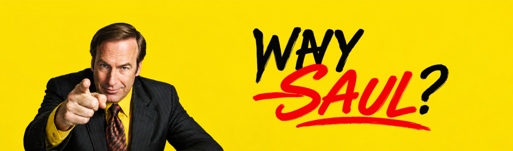

Who is Saul Goodman?
You don't need a criminal Lawyer,
You need a criminal Lawyer
Jimmy McGill
Before becoming Saul Goodman, he was Jimmy McGill, an ambitious lawyer determined to make a name for himself. He was the younger brother of Chuck McGill and had a complicated relationship with his family. Along the way, Jimmy formed close friendships and relationships, especially with Kim Wexler, whose love and influence deeply affected his life. After earning his law degree and passing the New Mexico Bar Exam, Jimmy faced rejection, personal struggles, and difficult choices that eventually led him to become the bold and unconventional Saul Goodman.
